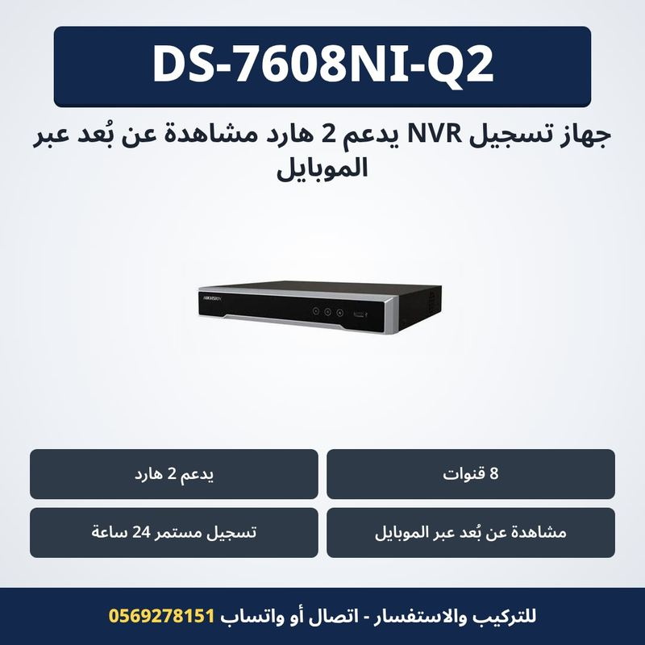

كل المنتجات ← كاميرات وأجهزة هيكفيجن
الموديل: DS-7608NI-Q2

| الماركة | هيكفيجن |
|---|---|
| الموديل | DS-7608NI-Q2 |
| نوع المنتج | جهاز تسجيل NVR |
| كشف الحركة 2.0 | |
| تحليل الأشخاص والمركبات | 4-ch |
| الفيديو والصوت | |
| مدخلات فيديو IP | 8-ch |
| النطاق الوارد | 80 Mbps |
| النطاق الصادر | 80 Mbps |
| مخرج HDMI | 1-ch, 4K (4096 × 2160)/30Hz, 4K (3840 × 2160)/30Hz, 2K (2560 × 1440)/30Hz, 1920 × 1080p/60Hz, 1600 × 1200/60Hz, 1280 × 1024/60Hz, 1280 × 720/60Hz |
| مخرج VGA | 1-ch, 1920 × 1080p/60Hz, 1600 × 1200/60Hz, 1280 × 1024/60Hz, 1280 × 720/60Hz, 1280×720 /60Hz |
| وضع إخراج الفيديو | HDMI/VGA simultaneous output |
| مخرج الصوت | 1-ch, RCA (Linear, 1 KΩ) |
| صوت ثنائي الاتجاه | 1-ch, RCA (2.0 Vp-p, 1KΩ) |
| التسجيل | |
| Stream Type | Video, Video & Audio |
| Audio Compression | G.711ulaw/G.711alaw/G.722/G.726 |
| فك الترميز | |
| Decoding Format | H.265+,H.265,H.264+,H.264 |
| Recording Resolution | 8 MP/6 MP/5 MP/4 MP/3 MP/1080p/UXGA /720p/VGA/4CIF/DCIF/ 2CIF/CIF/QCIF |
| Synchronous playback | 8-ch |
| Decoding Capability | AI&4K Off: 8-ch@1080p(30fps) AI/4K On: 6-ch@1080p(30fps) *: The length or width of camera resolution (each track) cannot exceed 4096 pixels. |
| الشبكة | |
| Remote Connection | 32 |
| Network Protocol | TCP/IP, DHCP, Hik-Connect, DNS, DDNS, NTP, SADP, SMTP, NFS, iSCSI, UPnP™, HTTPS |
| Network Interface | 1, RJ-45 10/100 Mbps self-adaptive Ethernet interface |
| الواجهات المساعدة | |
| SATA | 2 SATA interfaces |
| Capacity | Up to 8TB capacity for each disk |
| USB Interface | 2 × USB 2.0 |
| Alarm In/Out | N/A (4/1 is optional) |
| عام | |
| مصدر الطاقة | 12 VDC or ≤ 40 W |
| Consumption | ≤ 10 W (without enabling PoE) |
| حرارة العمل | -10 to +55º C (+14 to +131º F) |
| Working Humidity | 10 to 90 % |
| Dimension (W × D × H) | 384 × 223 × 48 mm (15.12" × 8.76" × 1.89") |
| Certification | |
| CE | 55032/55035/61000-3-2/61000-3-3/50130-4 |